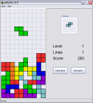
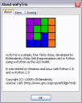

Here's a screenshot (you can see the full version by clicking on it):
And this is the About box, with some more information:
The game is downloadable from here. It's a source-only distribution, so you'll need Python 2.5 and wxPython 2.8 installed to run it.
Update 06.06.2008: I've uploaded a Windows executable (4.8 MB) of the game. It was created with py2exe and doesn't require installing anything in order to run.
The code is about 1 KLOC, divided into several files (Python's zip-import ability is used, so most of the code is in the lib.zip file). It is my first non-trivial Python program, so the code is probably far from being beautiful idiomatic Python, although I'm sure it's not bad.
(*) Back when I started programming, I really wanted to write a Tetris. At that time (1998) I wrote graphical programs using Borland's conio library, drawing on the DOS screen. After implementing a Snake clone, I felt ready for Tetris but got quickly stuck. I recall having a problem with the rotation code - I couldn't figure out how to rotate the blocks.
Later as I gained programming experience I realized that it's simple, but I didn't have the opportunity to get back to Tetris. Indeed, as it turned out, the rotation code is one of the simplest parts of the game. Most of my time was spent reading the wxPython manuals and getting all the GUI widgets to line-up nicely :-)